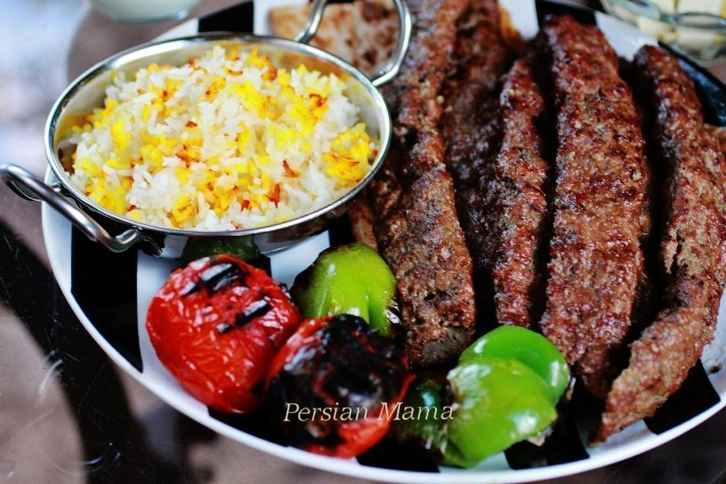

Kabab Koobideh
Ingredientes:
- - Costela de cordeiro moída
- - Acém moída
- - Cebola média
- - Tomate
- - Sal
- - Pimenta preta
- - Pimenta vermelha
- 500 gr
- 500 gr
- 2 -ralada
- 4
- Uma colher de chá
- Meia colher de chá
- Um quarto de colher de chá

Preparação:
- - Retire o sumo da cebola ralada
-
- Acrescente sal, pimenta preta, pimenta vermelha e cebola ralada à
carne moída
- - Misture-os
- - Asse a carne e os tomates
- - Sirva com arroz branco